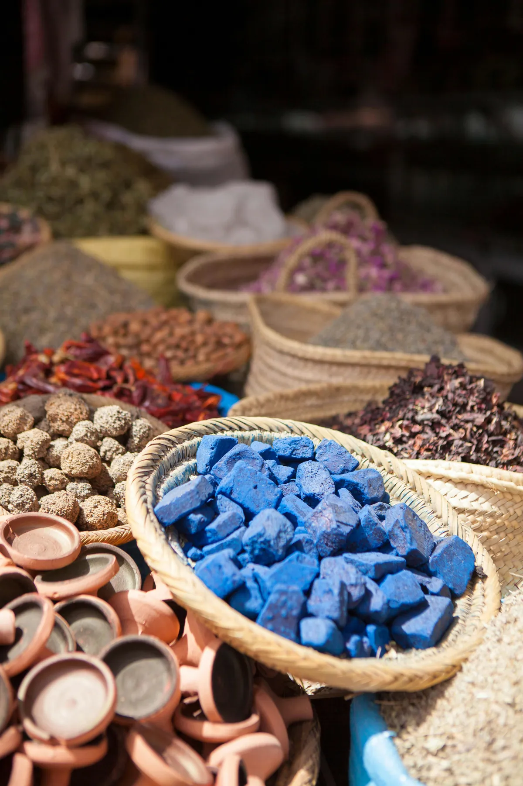
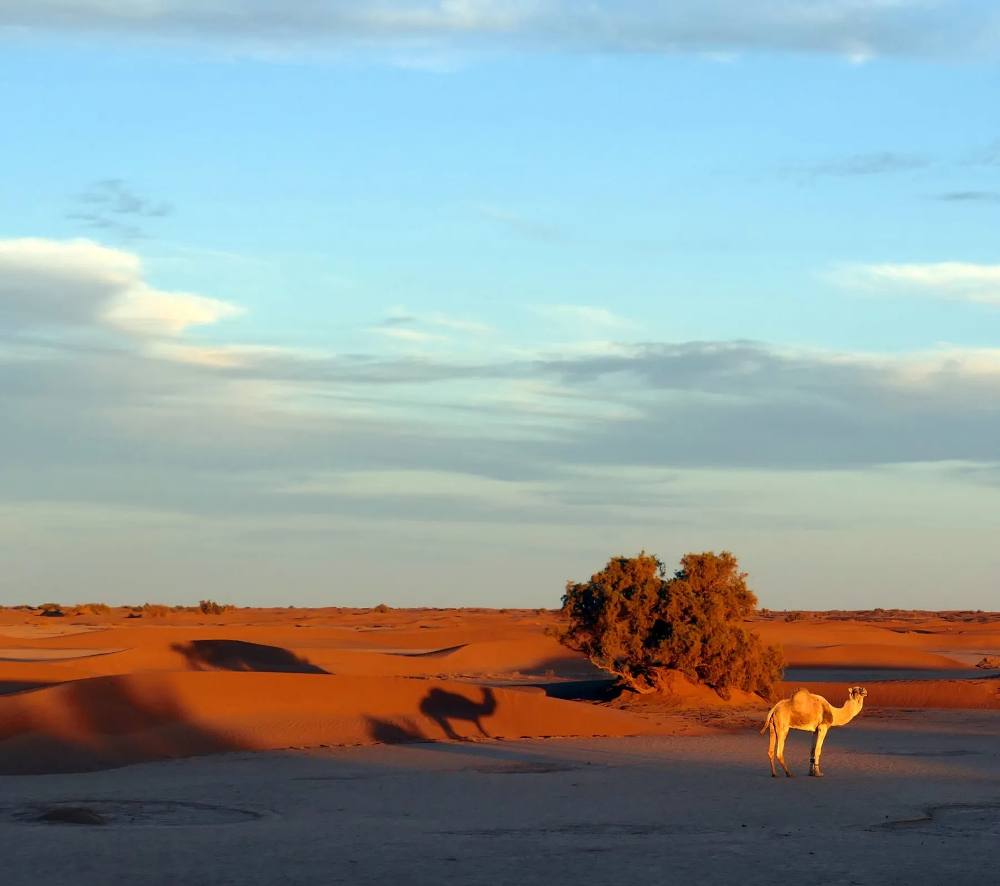
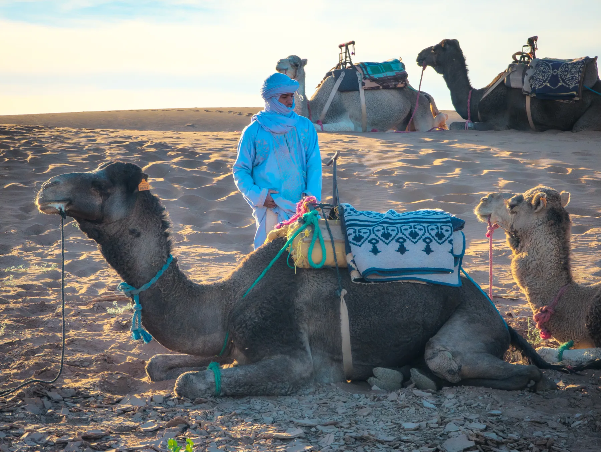
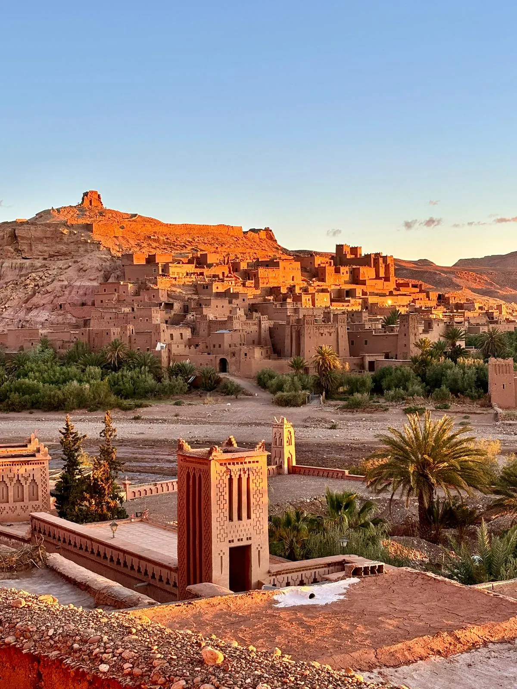

DÍA 1 · Marrakech
Primero, nos ubicamos
Llegamos a Marrakech y nos tomamos tiempo para aterrizar.
Sin empezar corriendo. Un primer día para descansar, pasear por la medina y empezar a entrar en el ritmo de Marruecos.

10 días · Marrakech · Oasis Fint · Valle del Drâa · Erg Chigaga · Aït Ben Haddou
Hay una forma de conocer Marruecos que no aparece en una lista de lugares.
Está en compartir un té con una familia, caminar entre palmerales, entrar en un mercado, conocer una artesanía, escuchar música alrededor del fuego o sentarse a conversar sin mirar el reloj.
The Nomad Route nace para acercarse a ese Marruecos.
Un viaje por el sur, entre oasis, palmerales, mercados, familias locales y las dunas de Erg Chigaga.
Quiero hacer esta ruta ↗Llegamos a Marrakech y nos tomamos tiempo para aterrizar.
Sin empezar corriendo. Un primer día para descansar, pasear por la medina y empezar a entrar en el ritmo de Marruecos.

Una mañana sin prisa para seguir descubriendo la ciudad.
Pasear, detenerse en un mercado, probar sus sabores y empezar a entrar en el ritmo de Marruecos.

Dejamos Marrakech y cruzamos el Atlas hacia el sur.
El paisaje se vuelve más árido y aparecen las primeras palmeras, kasbahs y pequeñas comunidades.
Llegamos a Oasis Fint, un pequeño oasis rodeado de roca y vegetación. Aquí comienza otra parte del viaje.

Hoy no venimos simplemente a visitar. Venimos a compartir.
Hacemos una excursión por el oasis y conocemos a una familia local. Comemos juntos, compartimos un té y nos acercamos a algunas de sus tradiciones.
También descubrimos la henna y conocemos un poco más de la vida de quienes habitan este territorio.

Seguimos hacia el Valle del Drâa.
Un paisaje de grandes palmerales, kasbahs y pueblos que siguen el curso del río. Visitamos un mercado local y nos acercamos a la vida cotidiana de esta región.
Aquí el paisaje no es solo bonito. Es la forma de vida de quienes lo habitan.

Desde Zagora continuamos hacia el desierto. Entramos en 4x4 y dejamos atrás las últimas señales de la vida urbana.
El paisaje se abre. Las dunas aparecen. Erg Chigaga.

Hay tiempo para caminar entre las dunas, descansar, compartir un té y conocer algunas de las tradiciones del Sahara.
Pan bajo la arena. Turbantes. Henna. Música saharaui. Fuego. Y un cielo que por la noche parece no terminar nunca.
Aquí no hace falta llenar el tiempo.

Dejamos atrás el Sahara y comenzamos el camino de regreso.
El paisaje vuelve a cambiar. Del desierto pasamos de nuevo a las montañas, los pueblos y las kasbahs.
Llegamos a Aït Ben Haddou, donde pasaremos nuestra última noche en el sur.

Cruzamos de nuevo el Atlas. El paisaje cambia una última vez antes de acercarnos a Marrakech.
La última noche la pasamos en Marrakech o en sus alrededores, según el horario del vuelo. Una última noche para descansar antes de volver a casa.

Desayuno y traslado al aeropuerto.
Te llevas fotografías, sabores, conversaciones y recuerdos. Pero sobre todo, una mirada diferente al sur de Marruecos.
Podemos adaptar el recorrido, la duración, los alojamientos y las experiencias según vuestro tiempo, intereses y forma de viajar.
Hablemos de esta ruta ↗